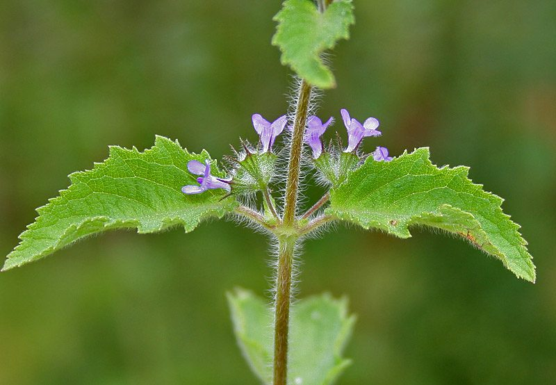

विलायती तुलसीVilayati Tulsi
Hyptis suaveolens · Lamiaceae · FLR-0203

- Scientific nameवैज्ञानिक नाम
- Hyptis suaveolens (L.) Poit.
- Familyकुल
- Lamiaceae
- Hindiहिंदी
- विलायती तुलसी
- Local namesस्थानीय नाम
- vilayati tulsi, bilayati tulsi, jangli tulsi, bushmint
- Status hereयहाँ की स्थिति
- invasive
- Movementआवागमन
- Resident, here all year
- IUCNIUCN
- not evaluated
- Reviewसमीक्षा
- audited and independently read
When to look कब देखें
Expected mainly in June, July, August, September, October, November, December, January.मुख्यतः जून, जुलाई, अगस्त, सितंबर, अक्टूबर, नवंबर, दिसंबर, जनवरी में अपेक्षित।
Tell it apart from इनसे अलग पहचानें
विलायती तुलसी / Vilayati Tulsi
Hyptis suaveolens (L.) Poit. — Lamiaceae
विलायती तुलसी (विलायत से आई हुई तुलसी) — विदेश से भारत में आई एक आक्रामक बूटी, जो अब सड़कों की मेड़ों, उजड़ी ज़मीन और खेतों में तेज़ी से फैल रही है। तना चौकोर, मज़बूत, 1-2 मीटर ऊँचा। पत्तियाँ बड़ी, दाँतेदार, सुगंधी, तुलसी जैसी पर उससे ज़्यादा तीखी गंध। फूल गुलाबी या सफेद, गुच्छों में। पूरा पौधा तीखी सुगंध वाला। यह विलायती प्रजाति अब स्थानीय पौधों को दबाने लगी है और यूपी के कई इलाकों में असली तुलसी की जगह ले रही है। भारतीय कृषि अनुसंधान संस्थान ने इसे आक्रामक प्रजाति सूची में डाला है।
Quick Identification त्वरित पहचान
| Feature | Description | |
|---|---|---|
| Stem | Square in cross-section, stout, 1–2 m, slightly hairy, green or purple-tinted | |
| Leaves | Ovate to lanceolate, 5–12 cm, serrate, opposite, aromatic, strongly scented | |
| Flowers | Pink, white, or pale purple, small, in dense whorled spikes or panicles | |
| Inflorescence | Axillary and terminal spikes, often branched into panicle | |
| Smell | Pungent, aromatic, stronger than [[tulsi\ | holy basil]]; somewhat unpleasant when crushed |
| Height | 60–200 cm, erect, branched |
Field tip: An erect, square-stemmed, strongly aromatic herb larger and coarser than holy basil, with pink or white flowers in dense clusters. The smell is distinctive and somewhat harsh. The plant spreads aggressively along roadsides and in disturbed areas.
Morphology आकारिकी
| Measurement | Range |
|---|---|
| Plant height | 60–200 cm |
| Leaf length | 5–12 cm |
| Leaf width | 3–8 cm |
| Spike length | 10–30 cm |
| Flower diameter | 0.5–0.8 cm |
Habit: Erect, robust annual or short-lived perennial herb; 60–200 cm tall; stem square in cross-section, stout, slightly hairy, green or purple-tinted, branched.
Leaves: Opposite, ovate to lanceolate, 5–12 cm × 3–8 cm; both surfaces slightly hairy; margins serrate (toothed); apex acute; base broadly cuneate; strongly aromatic, especially when crushed.
Flowers: Zygomorphic, pink, white, or pale purple, 0.5–0.8 cm; borne in whorls along spikes or in dense panicles; calyx tube hispid (hairy), 5-toothed; corolla 2-lipped, upper lip erect, lower lip 3-lobed; stamens 4.
Fruits: Nutlets, small, enclosed in the persistent calyx.
हिंदी: मज़बूत, बड़ा पौधा। पत्तियाँ बड़ी, तीखी गंध। फूल गुलाबी या सफेद। विदेश से आया पौधा।
Behaviour & Ecology व्यवहार और पारिस्थितिकी
Hyptis suaveolens is an invasive, allelopathic species native to Central and South America that has become a major pest in India and other tropical regions. The plant produces volatile allelochemicals that inhibit the germination and growth of nearby plants, particularly native species. This chemical allelopathy, combined with rapid growth and prolific seed production, makes Hyptis suaveolens a highly competitive invader.
The plant germinates readily in disturbed ground, roadsides, and abandoned fields, and can reach reproductive maturity within 3–4 months. Once established, it suppresses native vegetation through both physical shading and chemical allelopathy. Seed dispersal is primarily by wind and water; seeds remain viable in the soil for extended periods.
The plant has become dominant in many grassland and fallow areas of northern India, significantly reducing the diversity of native flora. Its invasion is particularly damaging in semi-arid regions where native shrubby species are already under stress.
हिंदी: विदेशी आक्रामक पौधा। अपनी गंध से दूसरे पौधों को दबाता है। स्थानीय पौधों को मारता है। बहुत तेज़ी से फैलता है।
Life Cycle / Phenology जीवन चक्र
| Month | Event |
|---|---|
| May–June | Seed germinates with monsoon onset; rapid seedling growth |
| June–August | Rapid vegetative growth; branching and canopy closure |
| August–November | Flowering; flowers produced continuously from terminals and axils |
| September–December | Seed maturation and shedding; massive seed production |
| December–February | Extended flowering in dry season if moisture adequate |
From germination to first flower: 6–8 weeks. A single plant can produce thousands of seeds over a season.
हिंदी: जून में अंकुरण। जुलाई-नवंबर फूल। सितंबर-दिसंबर बीज हज़ारों। बहुत तेज़ी से बढ़ता है।
Agricultural / Human Relevance कृषि और मानव संबंध
Invasive hazard: Hyptis suaveolens is listed as an invasive species by the Indian Council of Agricultural Research (ICAR). The plant has become one of the major threats to grasslands, semi-arid rangelands, and cropped areas throughout northern India. Dense Hyptis stands exclude native grasses and forbs, reducing biodiversity significantly.
Control measures: Hand-pulling of young plants is effective but labour-intensive in large areas. Chemical control using herbicides is possible but requires repeated application. No biological control agents have been identified in India. Prevention of seed set through early removal is the most cost-effective approach.
Historical use: In its native Central America, Hyptis suaveolens is used traditionally as a medicinal herb and culinary flavouring. However, the alkaloid content makes it somewhat toxic if consumed in large quantities.
Impact on native species: The plant's allelopathic chemicals directly suppress the growth of competitive native species, particularly grasses. The dense canopy also provides physical shading. The combination makes recovery of invaded areas difficult even after removal of Hyptis.
हिंदी: बहुत आक्रामक विदेशी प्रजाति। भारतीय कृषि अनुसंधान संस्थान की आक्रामक प्रजाति सूची में है। स्थानीय पौधों को मारता है। हाथ से निकालना पड़ता है। रोकना मुश्किल है।
Expected Locally स्थानीय रूप से अपेक्षित
Not a field record. Written from published accounts for eastern Uttar Pradesh. No confirmed local sighting yet — if you have seen it, that is what the atlas needs.
अभी तक स्थानीय पुष्टि नहीं। यह विवरण प्रकाशित स्रोतों से है, किसी अवलोकन से नहीं।
Hyptis suaveolens is expected to be present and expanding in roadsides, disturbed ground, and fallow areas in Basti district, particularly in semi-arid zones. The plant's aggressive nature means it should be reported whenever observed, to allow for monitoring of its spread and the coordination of control efforts.
Distribution वितरण
Global range: Native to Central and South America; introduced to tropical regions worldwide, now invasive in Africa, Asia, and Australia.
In India: Widespread in disturbed habitats, particularly in northern and western regions; increasingly common in eastern India.
In Uttar Pradesh: Present in many districts, particularly in semi-arid and disturbed areas; rapidly expanding range.
In Basti district / eastern UP: Reported from several blocks; distribution likely expanding.
Research Questions शोध प्रश्न
Anyone can investigate these | कोई भी इन प्रश्नों की जाँच कर सकता है
- How fast does vilayati tulsi spread in a fallow field over a season? — Mark a patch; measure expansion monthly.
- Does the leaf extract of vilayati tulsi inhibit the germination of native grasses? — Test germination of local grasses with and without leaf extract.
- What is the seed production of one vilayati tulsi plant, and how far do seeds disperse? — Count seed heads; measure dispersal range.
- Is hand-pulling of vilayati tulsi seedlings more effective than herbicide spray in your area? — Compare methods in adjacent plots.
- How long do vilayati tulsi seeds remain viable in soil, and what triggers germination? / विलायती तुलसी के बीज कितने दिन ज़मीन में रह सकते हैं? — Bury seeds; test germination at intervals.
Similar Species मिलती-जुलती प्रजातियाँ
| Species | How to tell apart | हिंदी |
|---|---|---|
| Gumma (Leucas aspera) | Smaller plant; spikes more compact; flowers pure white; less aggressive | छोटा पौधा, सफेद फूल, आक्रामक नहीं |
| Ocimum sanctum (Holy Basil) | Smaller (60–100 cm); flowers less dense; different leaf arrangement; non-invasive | तुलसी — छोटा, गंध अलग |
| Ocimum tenuiflorum | Smaller; purple flowers; not invasive; cultural significance | सुगंधी तुलसी — अलग गंध |
Field rule: A robust, tall (1–2 m), square-stemmed herb with large, strongly aromatic leaves and dense pink or white flowers in panicles, aggressively spreading along roadsides is vilayati tulsi.
Taxonomy & Classification वर्गीकरण
Original description. Hyptis suaveolens was originally described as Plectranthus suaveolens by Linnaeus in 1759, later transferred to Hyptis by Poiteau. The genus Hyptis (Greek hyptios, meaning "prone") refers to the calyx lobes. The specific epithet suaveolens means "sweetly smelling."
Subspecies. Monotypic — no subspecies are currently recognised.
Family and order placement. Lamiaceae (Mint family), order Lamiales. Native range suggests historical human dispersal, likely through colonial trade routes.
Phylogenetic notes. Hyptis suaveolens is closely related to other Central American Hyptis species and has undergone significant morphological variation since introduction to Asia.
IUCN status rationale. Not evaluated, but recognized as invasive in many tropical regions. Listed as an "invasive species of major concern" by agricultural authorities in India.
Photo Gallery फोटो गैलरी
Photos needed आवश्यक फोटो
- [ ] Full plant showing height and branching (पूरा पौधा)
- [ ] Dense flower spikes or panicles (फूलों के गुच्छे)
- [ ] Crushed leaves showing aromatic nature (सुगंधी पत्तियाँ)
- [ ] Mature seed heads (बीजों वाली बाली)
No photos yet — add field photos to media/species/vilayati_tulsi/ and run node scripts/sync_photos.js.
References संदर्भ
- Linnaeus, C. (1759). Species Plantarum, 2nd ed. Laurentii Salvii, Stockholm.
- Poiteau, J.A. (1809). Encyclopédie Méthodique, Botanique, Vol. 3. Paris.
- Hooker, J.D. (1885). Flora of British India, Vol. 4. L. Reeve & Co., London.
- Indian Council of Agricultural Research (2021). Invasive Species of Agricultural Concern in India. ICAR, New Delhi.
- Rajkumar, S., Bhagwat, S. & Watve, M. (2007). The role of periodic disturbances in species maintenance in grassland ecosystems. Journal of Ecology 95(5): 1296–1304.
- GBIF Occurrence Data — Hyptis suaveolens, India (2024–2026).
Source file: species/flora/weeds/vilayati_tulsi.md